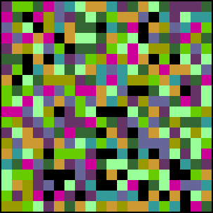
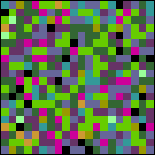
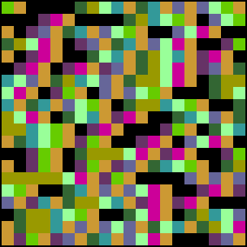

| This is not specifically about fractals, but about visual patterns
generated by randomness, and other processes.
Some of Ellsworth Kelly's Spectrum of Colors ...
paintings had colors assigned by intricate
mathematical relations, instead of just randomly. |
| Appearing in works by the cubists, Mondrian, Malevich, Klee, Kelly,
and others, the spatial
grid is one of the most common features of modern art. Of this grid, Krauss writes,
"Flattened, geometricized, ordered, it is anti-natural, anti-mimetic, anti-real. It is
what art looks like when it turns its back on nature.
(Cowart, pg. 37.) Yet for
Ellsworth Kelly, the strongest influence was the topographical grids of the cultivated
fields in northern France. |
| Of Kelly's grid paintings, we are most interested in the
series Spectrum of Colors
Arranged by Chance. As recorded in his Sketchbook 6, Kelly was influenced by
a collection of colored tiles, evidently arranged by chance, of the stern of a moored
barge. He destroyed his painting of the tiles, because he felt it was not an improvement
over the original. Still grids continued to influence his thinking, even subconsciously,
as witnessed by his "automatic" drawing of straight lines (using a ruler, but with
eyes closed) often produced gridded patterns. With the addition of randomly colored
squares to the grid, Kelly achieved an expression of the dialectic reason (grid) versus
passion (colors by chance). Also note Kelly's appreciation for the aesthetic character
of chance was heightened by his exposure to John Cage's stochastic music. To again quote
Cowart, "It seems odd, in that pre-Fractal/computer/digitizing world of 1951, to try to
geometricize irregular organic ephemera." While some of the colored squares were
arranged genuinely by chance, Kelly's notebooks reveal for some the colors were assigned
by complicated manipulation of numerical sequences and geometric constructions. |
| Motivated by this observation, physicist David Peak suggested using
this assignment of colors as a way to
visually assay correlations in
numerical data. Simple adaptations of this method are good tools
to experiment on the visual signatures of uniform,
normal,
Brownian,
fractional Brownian, and
Levy random processes. Differences between chaos and
randomness, and ways to recognize scaling, can be explored with this method. |
| For example, here are Kelly plots driven by |
|  |
 |
| a uniform random sequence | a normally distributed sequence |
 |
 |
| a Brownian sequence | iterates of the logistic map |
|